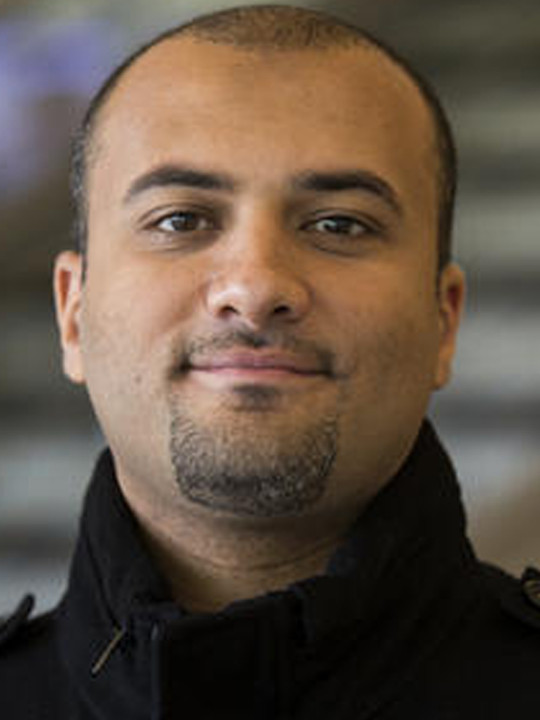

Alumni:
| 2024 |
Chengyuan Zhuang, Ph.D. (2016-2024)
Dissertation: Learning with Pre-defined Filters for Image Classification
GoogleScholar
with Department of Computer Science, University of Puerto Rico, Rio Piedras as an Assistant Profesor
|
| |
Abolfazl Meyarian, Ph.D. (2019-2024)
Dissertation: Leveraging Contextual Hierarchies in Semantic Segmentation
GoogleScholar
with industry
|
| |
Srinivas Pendotagaya (M.S.: 2022-2024)
Thesis: Contrastive Learning for Image Classification
with Ltimindtree
|
| 2022 |
Amar Man Maharjan, Ph.D.
(2016-2022)
Dissertation: Registration of Point Sets with Large and Uneven Non-rigid Deformation
GoogleScholar
with UNT
|
| 2021 |
Zhinan Qiao, Ph.D.
(2017-2021)
Dissertation: An Investigation of Scale Factor in Deep Networks for Scene Recognition
GoogleScholar
with Experian DataLabs
|
| 2020 |
Dr. Lin Zhou, (2020-2020), visiting scholar
Dr. Runmei Zhang, (2019-2020), visiting scholar
Dr. Liyao Zhu, (2019-2020), visiting scholar
Dr. Xiaojin Wu, (2020-2020), visiting scholar
Dr. Fang Fang, (2019-2020), visiting scholar
|
| 2019 |
Dr. Yingying Li, (2018-2019), visiting scholar
Dr. Qiang Chen, (2018-2019), visiting scholar.
Dr. Rui Fang, (2018-2019), visiting scholar
Dr. Jianxia Liu, (2018-2019), visiting scholar
Dr. Qiang Lu, (2018-2019), visiting scholar
Shuai Yang, (2017.9-2019.2), visiting scholar
|
| 2018 |
Wenbin Ouyang, Ph.D.
(2015-2018)
On-Loom Fabric Defect Inspection Using Contact Image Sensors and Activation Layer Embedded Convolutional Neural Network,
GoogleScholar
with Amazon
Dr. Tian Chen, (2017-2018), visiting scholar
Dr. Jinhai Xiang, (2017-2018), visiting scholar
Dr. Hua Li, (2017-2018), visiting scholar
Dr. Xiangang Luo, (2017-2018), visiting scholar
|
| 2017 |
Longbo Kong, Ph.D.
(2014-2017)
Automatic Human Joint Detection from Depth Videos
GoogleScholar
with OxeFit
Dr. Jianfang Shi, (2016 - 2017), visiting scholar
Dr. Zejun Zuo, (2016 - 2017), visiting scholar
Dr. Zhenchun Wei, (2016 - 2017), visiting scholar
Dr. Lichuan Gu, (2016 - 2017), visiting scholar
Dr. Baofu Fang, (2016 - 2017), visiting professor
Dr. Linquan Yang, (2016 - 2017), visiting professor
Dr. Lin Feng, (2016 - 2017), visiting professor
|
| 2016 |
Siyuan Liu, MS, Learning from Small Data Set for Object Recognition in Mobile Platforms
Dr. Mohamed Elhoseny, (2014 - 2016), visiting scholar
Dr. Wencheng Wang, (2015 - 2016), visiting professor
Dr. Dengchao Feng, (2015 - 2016), visiting professor
|
| 2015 |
Deepankar Mohapatra, MS, Automatic Removal of Complex Shadows from Indoor Video , with Intuit, Plano, TX
Dr. Xiong Wei, (2014 - 2015), Asso. Prof., visiting professor
|
| 2014 |
Eslam Foad, (2014 - 2014), Dept. of CS, Mansoura University, Robust Binary Representation for Biometric Templates
|
| 2013 |

Mohamed Abouelenien, Ph.D.
(2009-2013), with University of Michigan-Dearborn
Boosting for Learning from Imbalanced, Multi-class Data Sets
Krunalkumar Patel, M.S.
Dongyu Ang, M.S., Rushworks, Dallas, TX
Mohan Velagaleti, M.S., Fidelity Investments, Dallas, TX
| | 2012 |
Balathasan Giritharan, Ph.D.
(2007-2012)
Incremental Learning from Large Data Sets
GoogleScholar
with Monsanto
Sree Vani Vallabhaneni, M.S., with Ericsson
Vikram Vuppla, M.S., Sabre Co., Dallas, TX
Dr. Anusha Channamma, visiting scholar, Assi. Prof., Sri Jayachamarajendra College of Eng.
|
| 2011 |
Madhavi Gummadi, M.S., India
|
| 2010 |
Jarvie John Samuel, M.S., Elicitation of Protein-Protein Interactions From Biomedical Literature using Association Rule Discovery
|
| 2009 |
Vaibhav Sarma, M.S., Urban Surface Characterizatio nusing LiDAR and Aerial Imagery, MapFrame
|
| |
| |
|